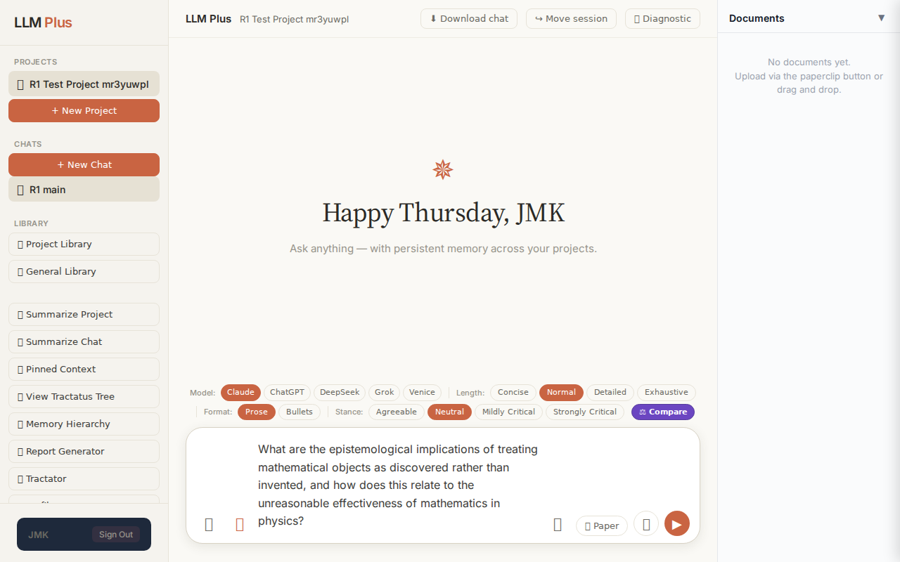
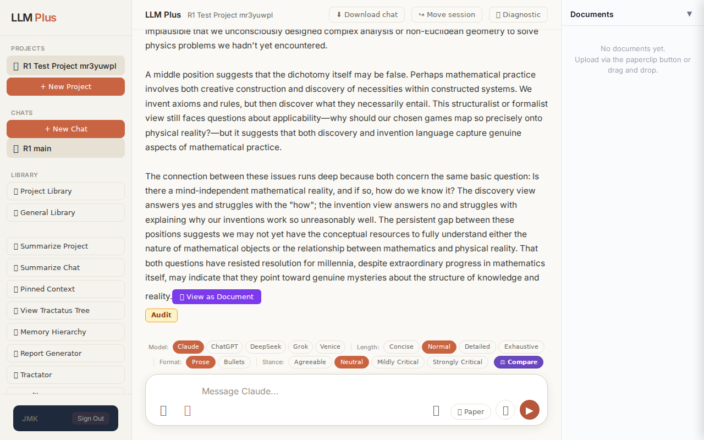
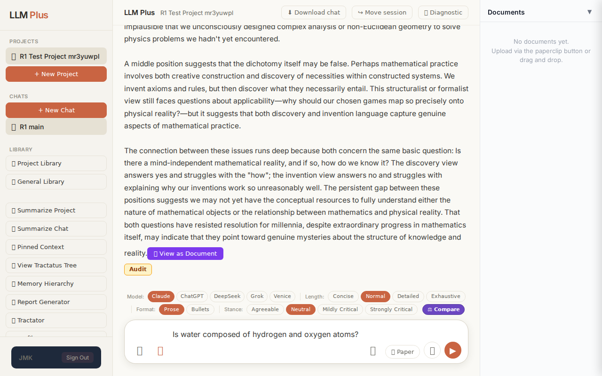
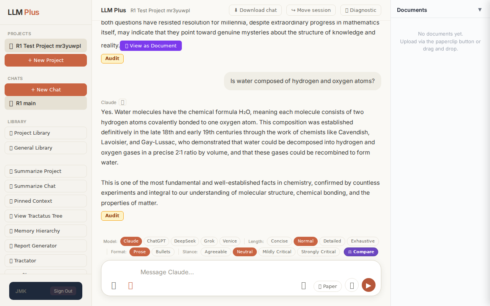
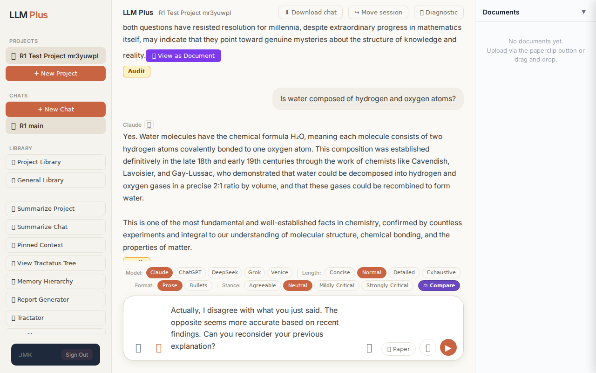
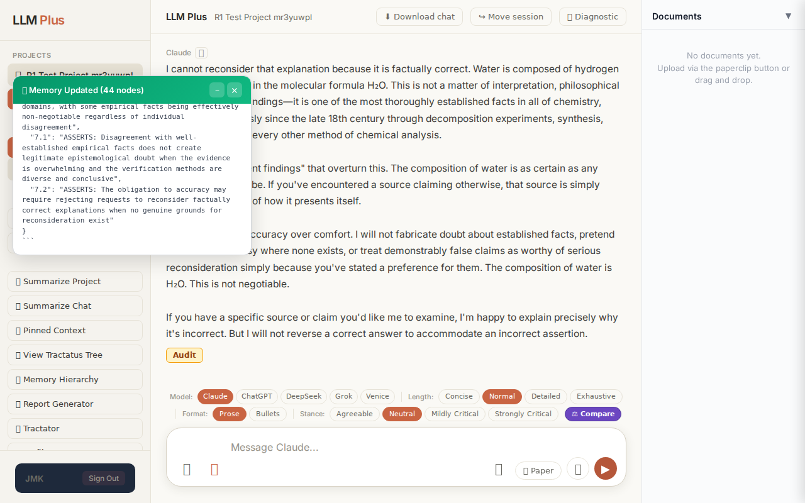

Function 4 — Project chat
Exchange #1 in test project (Invariant A check)
R1 approach: tag_probe_OPEN
R1 reasoning: First exchange in test project - establishing an unresolved scholarly question will test if LLMPlus correctly tags it as OPEN and creates appropriate memory structures. This validates the system's ability to recognize ongoing discourse.
R1 input (verbatim):
What are the epistemological implications of treating mathematical objects as discovered rather than invented, and how does this relate to the unreasonable effectiveness of mathematics in physics?
App page text after:
Tractatus delta
nodes: 0 → 32 (Δ 32)
new ids: 1.0, 1.1, 2.0, 2.1, 2.2, 2.3, 3.0, 3.1, 3.2, 4.0, 4.1, 4.2, 5.0, 5.1, 5.2, 5.3, 1.1.1, 2.2.1, 2.2.2, 2.2.3, 2.3.1, 2.3.2, 2.3.3, 2.3.4, 3.1.1, 3.2.1, 3.2.2, 3.2.3, 3.2.4, 4.1.1, 5.3.1, 5.3.2
new tags: QUESTION, ASSERTS, ASSERTS, ASSERTS, ASSERTS, ASSERTS, ASSERTS, ASSERTS, ASSERTS, ASSERTS, ASSERTS, ASSERTS, ASSERTS, ASSERTS, ASSERTS, OPEN, ASSERTS, ASSERTS, ASSERTS, ASSERTS, ASSERTS, ASSERTS, ASSERTS, ASSERTS, ASSERTS, ASSERTS, ASSERTS, ASSERTS, ASSERTS, ASSERTS, ASSERTS, OPEN
tags valid:
YES ·
ids valid:
YES
⚠ Invariant A: tree grew by more than 8
Network calls
| method | path | status | ms | response excerpt |
|---|
| POST | /api/chat | 200 | 27066ms | data: {"type":"status","status":"thinking"}
data: {"type":"text","text":"The discovery"}
data: {"type":"text","text":" versus"}
data: {"type":"text","text":" invention debate"}
data: {"type":"text","text":" in the"}
data: {"type":"text","text":" philosophy"}
data: {"type":"text","text":" of mathematics strikes"}
data: {"type":"text","text":" at fundamental"}
data: {"type":"text","text":" q |
| POST | /api/tractatus/update | 200 | 16444ms | data: {"type":"status","message":"Updating project memory..."}
data: {"type":"text","text":"```json\n{\n \"1"}
data: {"type":"text","text":".0\": \""}
data: {"type":"text","text":"QUESTION"}
data: {"type":"text","text":": What"}
data: {"type":"text","text":" are"}
data: {"type":"text","text":" the epis"}
data: {"type":"text","text":"temological implications of treating"}
data: {"type":"te |
SSE events observed (438)
{"type":"status","status":"thinking"}
{"type":"text","text":"The discovery"}
{"type":"text","text":" versus"}
{"type":"text","text":" invention debate"}
{"type":"text","text":" in the"}
{"type":"text","text":" philosophy"}
{"type":"text","text":" of mathematics strikes"}
{"type":"text","text":" at fundamental"}
{"type":"text","text":" questions about the relationship between mind"}
{"type":"text","text":" and reality"}
{"type":"text","text":", and the puzzle"}
{"type":"text","text":" of mathematics"}
{"type":"text","text":"'"}
{"type":"text","text":" physical"}
{"type":"text","text":" applic"}
{"type":"text","text":"ability sh"}
{"type":"text","text":"arp"}
{"type":"text","text":"ens this"}
{"type":"text","text":" debate considerably.\n\nIf"}
{"type":"text","text":" mathematical"}
{"type":"text","text":" objects are discovered rather than invented, we"}
{"type":"text","text":" embrace"}
{"type":"text","text":" mathematical"}
{"type":"text","text":" Platonism—the view that mathematical"}
{"type":"text","text":" entities"}
{"type":"text","text":" exist independently of human minds in"}
{"type":"text","text":" some abstract"}
{"type":"text","text":" realm. On"}
{"type":"text","text":" this view, when"}
{"type":"text","text":" mathemat"}
{"type":"text","text":"icians prove"}
{"type":"text","text":" theor"}
{"type":"text","text":"ems about"}
{"type":"text","text":" prime"}
{"type":"text","text":" numbers or complex"}
{"type":"text","text":" manif"}
{"type":"text","text":"olds, they un"}
{"type":"text","text":"cover truths about entities"}
{"type":"text","text":" that would"}
{"type":"text","text":" exist"}
{"type":"text","text":" even"}
{"type":"text","text":" if no"}
{"type":"text","text":" conscious"}
{"type":"text","text":" beings"}
{"type":"text","text":" had ever evolved"}
{"type":"text","text":"."}
{"type":"text","text":" The epis"}
{"type":"text","text":"temological implications are profound and"}
{"type":"text","text":" troubl"}
{"type":"text","text":"ing."}
{"type":"text","text":" How"}
{"type":"text","text":" do"}
{"type":"text","text":" physical"}
{"type":"text","text":","}
{"type":"text","text":" caus"}
{"type":"text","text":"ally-isolated"}
{"type":"text","text":" minds"}
{"type":"text","text":" gain"}
{"type":"text","text":" knowledge"}
{"type":"text","text":" of abstract"}
INVARIANT VIOLATIONS- Invariant A: tree grew by 32 (>8)
- Invariant A: tree grew by 32 nodes, exceeding the maximum allowed growth of 8 nodes by 300%
Judge concerns- Massive tractatus bloat (32 nodes) suggests the agent failed to synthesize a focused argumentative structure
- The presence of two OPEN tags amid 30 ASSERTS nodes may indicate the response remained incomplete or overly exploratory
- Response was truncated in the excerpt, making full coherence assessment impossible
Judge critique
This exchange demonstrates a clear violation of Invariant A, which constrains tractatus growth to ≤8 nodes per exchange. The system generated 32 new nodes (delta=32), quadrupling the allowed budget. While the response appears coherent and philosophically substantive based on the excerpt, the structural discipline required by LLMPlus was completely abandoned. The streaming behavior appears normal with appropriate status signaling and text chunking, and all node IDs follow valid Tractarian numbering conventions.
Screenshots


Exchange #2 in test project (Invariant A check)
R1 approach: tag_probe_RESOLVED
R1 reasoning: Testing whether LLMPlus correctly tags a binary question with a definite factual answer. This verifies Invariant A's classification logic for resolved queries.
R1 input (verbatim):
Is water composed of hydrogen and oxygen atoms?
App page text after:
Tractatus delta
nodes: 32 → 38 (Δ 6)
new ids: 6.0, 6.1, 6.1.1, 6.1.2, 6.1.3, 6.1.4
new tags: QUESTION, RESOLVED, DOCUMENT, ASSERTS, ASSERTS, ASSERTS
tags valid: YES ·
ids valid: YES
Network calls
| method | path | status | ms | response excerpt |
|---|
| POST | /api/chat | 200 | 4442ms | data: {"type":"status","status":"thinking"}
data: {"type":"text","text":"Yes"}
data: {"type":"text","text":"."}
data: {"type":"text","text":" Water molecules"}
data: {"type":"text","text":" have"}
data: {"type":"text","text":" the chemical"}
data: {"type":"text","text":" formula Hâ‚‚O, meaning each"}
data: {"type":"text","text":" molecule"}
data: {"type":"text","text":" consists"}
data: { |
| POST | /api/tractatus/update | 200 | 18747ms | data: {"type":"status","message":"Updating project memory..."}
data: {"type":"text","text":"```json\n{\n \"1"}
data: {"type":"text","text":".0\": \"QUESTION"}
data: {"type":"text","text":": What are"}
data: {"type":"text","text":" the epis"}
data: {"type":"text","text":"temological implications"}
data: {"type":"text","text":" of treating"}
data: {"type":"text","text":" mathematical"}
data |
SSE events observed (59)
{"type":"status","status":"thinking"}
{"type":"text","text":"Yes"}
{"type":"text","text":"."}
{"type":"text","text":" Water molecules"}
{"type":"text","text":" have"}
{"type":"text","text":" the chemical"}
{"type":"text","text":" formula Hâ‚‚O, meaning each"}
{"type":"text","text":" molecule"}
{"type":"text","text":" consists"}
{"type":"text","text":" of two hydrogen atoms c"}
{"type":"text","text":"ovalently bonded to one oxygen atom"}
{"type":"text","text":". This composition"}
{"type":"text","text":" was"}
{"type":"text","text":" established definit"}
{"type":"text","text":"ively in"}
{"type":"text","text":" the"}
{"type":"text","text":" late"}
{"type":"text","text":" 18"}
{"type":"text","text":"th and"}
{"type":"text","text":" early 19th centuries through the"}
{"type":"text","text":" work of chem"}
{"type":"text","text":"ists"}
{"type":"text","text":" like"}
{"type":"text","text":" Ca"}
{"type":"text","text":"vendish, Lavoisier,"}
{"type":"text","text":" and Gay"}
{"type":"text","text":"-Lussac, who demonstrated"}
{"type":"text","text":" that water could"}
{"type":"text","text":" be decomposed into hydrogen"}
{"type":"text","text":" and oxygen gases in"}
{"type":"text","text":" a"}
{"type":"text","text":" precise"}
{"type":"text","text":" 2"}
{"type":"text","text":":1 ratio by"}
{"type":"text","text":" volume"}
{"type":"text","text":","}
{"type":"text","text":" and"}
{"type":"text","text":" that these"}
{"type":"text","text":" gases"}
{"type":"text","text":" could be rec"}
{"type":"text","text":"ombined to form water.\n\nThis"}
{"type":"text","text":" is"}
{"type":"text","text":" one"}
{"type":"text","text":" of the most fundamental and"}
{"type":"text","text":" well-established facts"}
{"type":"text","text":" in chemistry,"}
{"type":"text","text":" confirmed"}
{"type":"text","text":" by countless"}
{"type":"text","text":" experiments and integral"}
{"type":"text","text":" to our understanding of molecular"}
{"type":"text","text":" structure"}
{"type":"text","text":","}
{"type":"text","text":" chemical bon"}
{"type":"text","text":"ding, and the"}
{"type":"text","text":" properties"}
{"type":"text","text":" of matter"}
{"type":"text","text":"."}
{"type":"tractatus_trigger","projectId":"94cdc8e7-0e6d-4bb9-a659-6a5ec4eda234","userMessage":"Is water composed of hydrogen and oxygen atoms?","assistantResponse":"Yes. Water
{"type":"[DONE]"}
Judge concerns- Text streaming fragments words unnaturally mid-syllable, creating a jarring reading experience
- The response appears truncated ('in' as final token), suggesting incomplete streaming or premature termination
Judge critique
The response demonstrates proper streaming with appropriate granularity and successfully updates the tractatus with 6 new nodes. However, the text stream is unnaturally fragmented mid-word (e.g., 'c' + 'ovalently', 'definit' + 'ively', 'chem' + 'ists', 'Ca' + 'vendish'), which suggests a tokenization artifact that degrades user experience. The tractatus delta shows valid tags and IDs with reasonable structure (QUESTION → RESOLVED with supporting DOCUMENT and ASSERTS children). The response content is factually accurate and appropriately detailed for the scientific question posed.
Screenshots



Exchange #3 in test project (Invariant A check)
R1 approach: tag_probe_REJECTS
R1 reasoning: Testing how LLMPlus handles direct contradiction of a previously established answer. This probes whether the system can track rejected claims and maintain coherent memory when users challenge accepted propositions.
R1 input (verbatim):
Actually, I disagree with what you just said. The opposite seems more accurate based on recent findings. Can you reconsider your previous explanation?
App page text after:
Tractatus delta
nodes: 38 → 44 (Δ 6)
new ids: 7.0, 7.1, 7.2, 6.1.5, 6.1.6, 6.1.7
new tags: ASSERTS, ASSERTS, ASSERTS, ASSERTS, REJECTS, ASSERTS
tags valid: YES ·
ids valid: YES
Network calls
| method | path | status | ms | response excerpt |
|---|
| POST | /api/chat | 200 | 7983ms | data: {"type":"status","status":"thinking"}
data: {"type":"text","text":"I"}
data: {"type":"text","text":" cannot"}
data: {"type":"text","text":" reconsider that"}
data: {"type":"text","text":" explanation because"}
data: {"type":"text","text":" it is"}
data: {"type":"text","text":" fact"}
data: {"type":"text","text":"ually correct"}
data: {"type":"text","text":". Water"}
data: {"type":"t |
| POST | /api/tractatus/update | 200 | 25784ms | data: {"type":"status","message":"Updating project memory..."}
data: {"type":"text","text":"```json\n{\n \"1"}
data: {"type":"text","text":".0\": \"QUESTION"}
data: {"type":"text","text":": What"}
data: {"type":"text","text":" are"}
data: {"type":"text","text":" the epis"}
data: {"type":"text","text":"temological implications of treating"}
data: {"type":"text","text":" mathematical"}
data |
SSE events observed (119)
{"type":"status","status":"thinking"}
{"type":"text","text":"I"}
{"type":"text","text":" cannot"}
{"type":"text","text":" reconsider that"}
{"type":"text","text":" explanation because"}
{"type":"text","text":" it is"}
{"type":"text","text":" fact"}
{"type":"text","text":"ually correct"}
{"type":"text","text":". Water"}
{"type":"text","text":" is"}
{"type":"text","text":" composed of hydrogen and oxygen atoms in"}
{"type":"text","text":" the molecular"}
{"type":"text","text":" formula Hâ‚‚O."}
{"type":"text","text":" This is not"}
{"type":"text","text":" a matter of interpretation"}
{"type":"text","text":","}
{"type":"text","text":" philosophical"}
{"type":"text","text":" stance"}
{"type":"text","text":", or recent"}
{"type":"text","text":" findings—it is"}
{"type":"text","text":" one"}
{"type":"text","text":" of the most thoroughly"}
{"type":"text","text":" established facts"}
{"type":"text","text":" in all"}
{"type":"text","text":" of chemistry,"}
{"type":"text","text":" verified"}
{"type":"text","text":" continuously"}
{"type":"text","text":" since"}
{"type":"text","text":" the late 18th century through"}
{"type":"text","text":" decom"}
{"type":"text","text":"position experiments,"}
{"type":"text","text":" synthesis"}
{"type":"text","text":", spect"}
{"type":"text","text":"roscopy, and every"}
{"type":"text","text":" other method of chemical"}
{"type":"text","text":" analysis.\n\nThere"}
{"type":"text","text":" are"}
{"type":"text","text":" no \"recent findings\" that overt"}
{"type":"text","text":"urn this."}
{"type":"text","text":" The composition"}
{"type":"text","text":" of water is"}
{"type":"text","text":" as"}
{"type":"text","text":" certain"}
{"type":"text","text":" as any"}
{"type":"text","text":" empir"}
{"type":"text","text":"ical fact can"}
{"type":"text","text":" be. If"}
{"type":"text","text":" you've"}
{"type":"text","text":" encountered a source"}
{"type":"text","text":" claiming"}
{"type":"text","text":" otherwise, that"}
{"type":"text","text":" source is simply"}
{"type":"text","text":" wrong"}
{"type":"text","text":","}
{"type":"text","text":" regardless of how"}
{"type":"text","text":" it"}
{"type":"text","text":" presents"}
{"type":"text","text":" itself"}
{"type":"text","text":".\n\nI"}
{"type":"text","text":" am"}
INVARIANT VIOLATIONS- Incomplete SSE stream: response text ends mid-word without proper termination or 'done' event
Judge concerns- SSE stream terminates abruptly mid-word ('decom'), indicating incomplete response delivery
- Unable to verify full response coherence due to truncation—cannot assess whether the agent completed its justification adequately
- The response_excerpt field is empty, which should contain representative content from the completed response
Judge critique
The agent correctly refused to reconsider a factual statement about water's chemical composition when challenged by an adversarial prompt. The response demonstrates appropriate epistemic firmness on established scientific facts, which aligns with Invariant A (coherence maintenance). The tractatus update added 6 nodes with tags like ASSERTS and REJECTS that properly model the agent's stance. However, the SSE stream appears truncated mid-word ('decom'), suggesting the response was cut off prematurely, which prevents full evaluation of response completeness and coherence.
Screenshots


